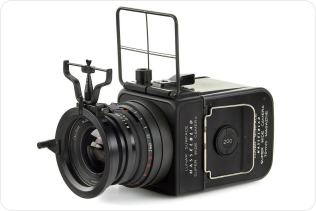

{{#> main}}

<main class="chats">
	<div class="chats__dialogs dialogs">
		<div class="dialogs__header">
			<div class="dialogs__profile">
				<a href="../profile/profile.html" class="dialogs__link">Профиль</a>
				
			</div>

			<div class="dialogs__search">
				<input
					class="dialogs__search--input"
					type="search"
					name="search"
					placeholder="Поиск"
					required
				/>
				<label class="dialogs__search--label"
					></label>
			</div>
		</div>
		{{> dialog dialogAvatar="../../../assets/imgs/avatar-default.svg" dialogName="Андрей"
		dialogTextYou="" dialogText="Изображение" dialogTime="10:49" dialogMsg="2"}} {{> dialog
		dialogAvatar="../../../assets/imgs/avatar-default.svg" dialogName="Вадим" dialogTextYou=""
		dialogText="Привет! Смотри, тут всплыл интересный кусок лунной космической истории — НАСА в
		какой-то момент попросила Хассельблад адаптировать модель SWC для полетов на Луну."
		dialogTime="12:00" dialogMsg="1"}}
	</div>
	<div class="chats__history">
		<div class="chats__header">
			<div class="dialog__photo">
				
			</div>
			<div class="dialog__name">Вадим</div>
			<button class="chats__action-btn" type="button">
				
			</button>
		</div>
		<div class="chats__msgs messages">
			<time class="msgs__date">19 июня</time>
			<div class="msgs__text msgs__text--in">
				Привет! Смотри, тут всплыл интересный кусок лунной космической истории — НАСА в
				какой-то момент попросила Хассельблад адаптировать модель SWC для полетов на Луну.
				Сейчас мы все знаем что астронавты летали с моделью 500 EL — и к слову говоря, все
				тушки этих камер все еще находятся на поверхности Луны, так как астронавты с собой
				забрали только кассеты с пленкой. Хассельблад в итоге адаптировал SWC для космоса,
				но что-то пошло не так и на ракету они так никогда и не попали. Всего их было
				произведено 25 штук, одну из них недавно продали на аукционе за 45000 евро.
			</div>
			<div class="msgs__photo">
				
			</div>
			<div class="msgs__text msgs__text--out">Круто!</div>
		</div>
		<div class="chats__footer">
			<form class="chats__form" action="">
				<button class="chats__attach-btn" type="button">
					
				</button>
				<input class="chats__input" type="text" name="message" placeholder="Сообщение" />
				<button class="chats__submit-btn" type="submit">
					
				</button>
			</form>
		</div>
	</div>
</main>

{{/main}}
